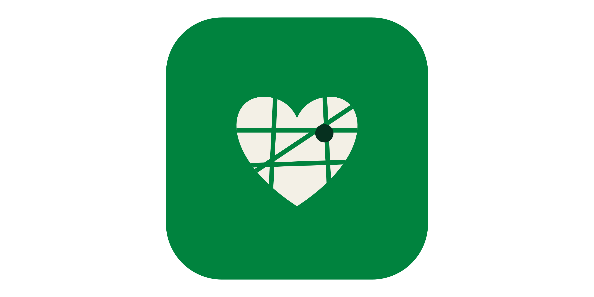
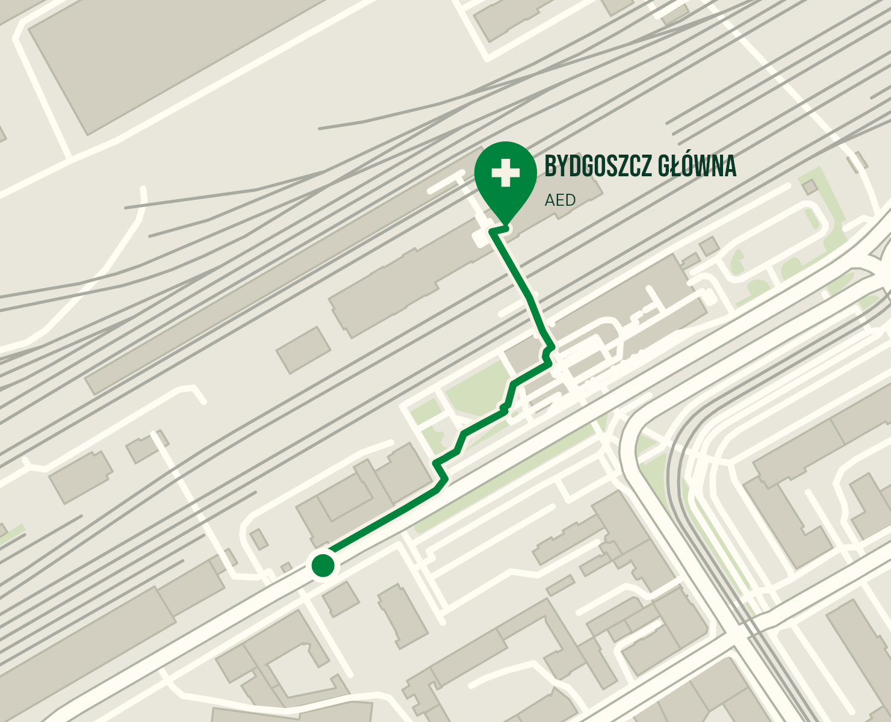
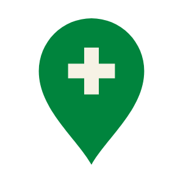
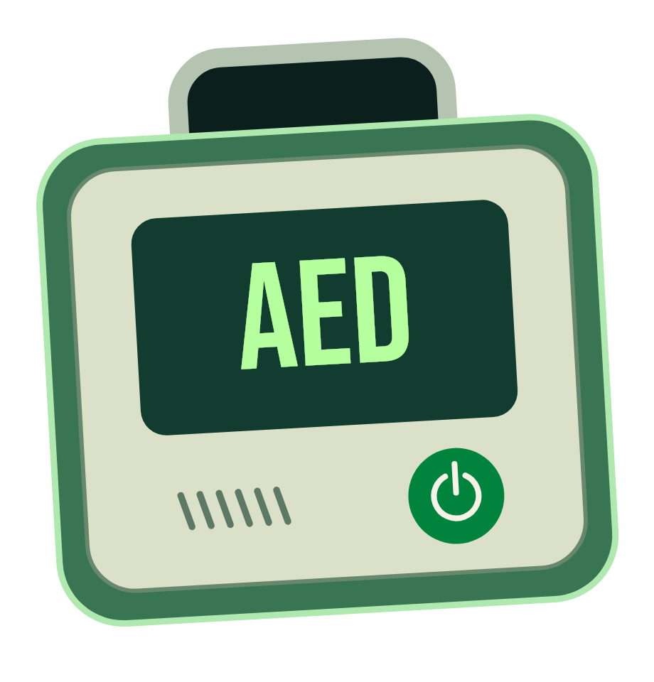
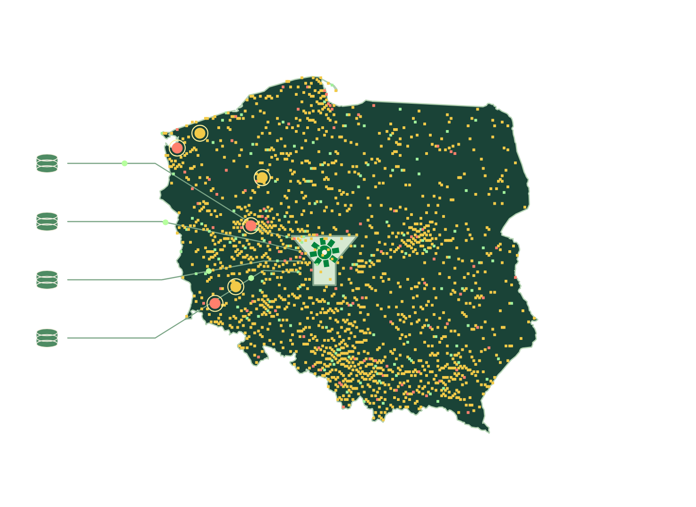
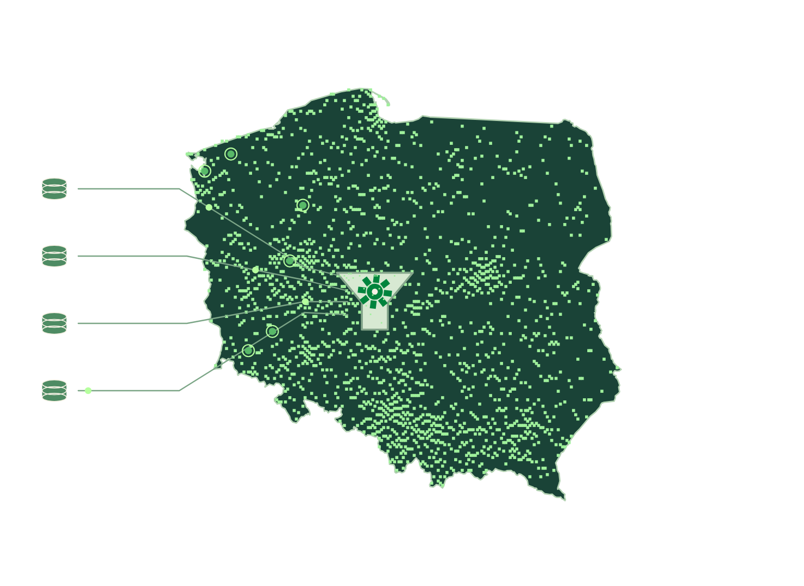
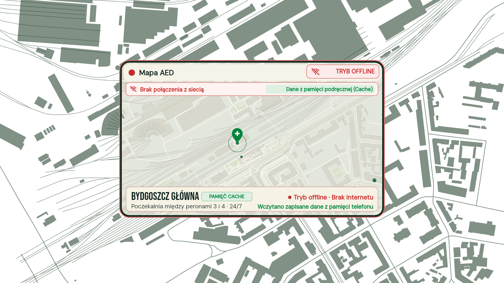
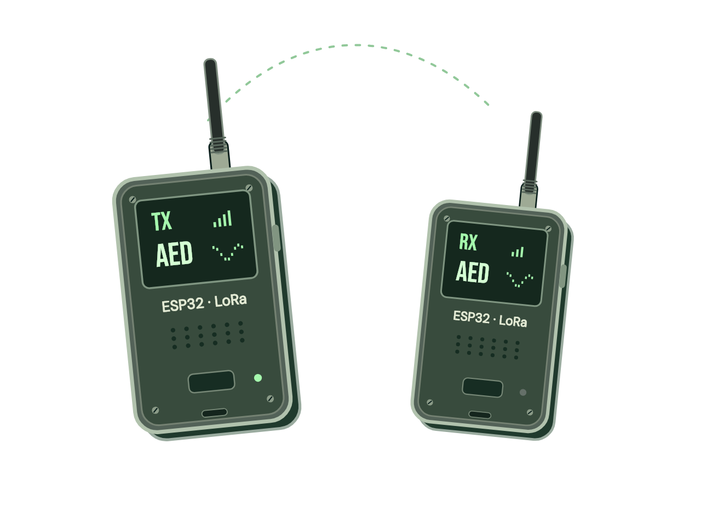
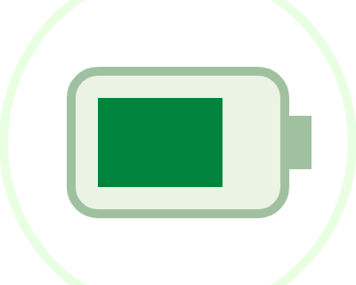

Adres to dopiero początek.
AED może być w budynku, do którego nie można wejść po zamknięciu. Potrzebne są godziny dostępu, opis wejścia i dokładne położenie szafki.

Serce OkolicySERCE OKOLICY / ODBLOKUJ AED
Znajdź AED. Sprawdź, jak do niego dotrzeć. Pomóż zadbać o jego gotowość. Jedna wspólna mapa łączy ludzi, firmy i miejsca, które mają znaczenie.

Historia tej mapy
Zobacz, skąd wzięło się Serce Okolicy.
Film przedstawia obecną mapę oraz propozycje dalszego rozwoju, w tym sieć radiową i możliwe wsparcie utrzymania AED.
Problem
Przy nagłym zatrzymaniu krążenia liczą się szybkie rozpoczęcie RKO i użycie AED. Tymczasem informacje o urządzeniach są rozproszone w różnych bazach, a sam adres nie mówi, czy można wejść do budynku ani gdzie znajduje się szafka.
Punkt na mapie jest naprawdę pomocny wtedy, gdy informacje za nim pomagają dotrzeć do urządzenia.
Stan danych projektu: 21 listopada 2026. Brak godzin nie oznacza, że urządzenie jest niedostępne.
Jeśli osoba nie reaguje i nie oddycha prawidłowo, zadzwoń pod 112, zacznij uciskać klatkę piersiową i poproś drugą osobę o przyniesienie AED. Postępuj zgodnie z instrukcjami dyspozytora i urządzenia.
Pierwsza pomoc · Ministerstwo ZdrowiaJedna mapa. Więcej możliwości.
Serce Okolicy łączy lokalizacje AED z różnych źródeł, aby łatwiej było je znaleźć i sprawdzić dostępne informacje.
Z myślą o pomocy

Wyszukaj miejsce lub sprawdź urządzenia w swojej okolicy.

Zobacz adres, informacje o dostępie i źródła, jeśli są dostępne.
Zapisz wcześniej wybrany obszar, aby mieć lokalizacje AED także bez internetu.
Od rozproszonych danych do jednej mapy
Łączymy OpenAEDMap oraz dane miejskie Krosna, Przemyśla i Marek. Porównujemy wpisy, łączymy możliwe duplikaty, a sprzeczne informacje kierujemy do weryfikacji.
Przy punkcie można sprawdzić źródła i ocenę jakości dostępnych danych. Ocena nie potwierdza aktualnej gotowości urządzenia do użycia.



Przygotuj się wcześniej
Gdy masz internet, zapisz wybrany obszar w telefonie. Zapisane lokalizacje AED i uproszczona mapa pozostaną dostępne po utracie połączenia. Aplikacja może też zachować ostatnio wczytane wyniki.
Zapisz obszar wcześniej. Mapa ulic wymaga połączenia z internetem.
Miej pomoc pod ręką
Otwórz aplikację, sprawdź najbliższe AED i zapisz swój obszar. Możesz dodać aplikację do ekranu głównego telefonu, korzystając z opcji przeglądarki.
Wyszukaj miejsce lub użyj swojej lokalizacji. Sprawdź opis dostępu, a nie tylko odległość.
Android: menu przeglądarki → Zainstaluj aplikację lub Dodaj do ekranu głównego. iPhone: Safari → Udostępnij → Do ekranu początkowego. Dostępność opcji zależy od przeglądarki.
W aplikacji wybierz obszar do zapisania offline, gdy masz internet. Odświeżaj dane przed kolejnym użyciem.
Kierunek na przyszłość
Film pokazuje pomysł lokalnej sieci radiowej opartej na LoRa i Meshtastic. Kompatybilne węzły mogłyby przekazywać informacje o AED między miejscami podczas awarii łączności, pomagając społecznościom wymieniać ważne dane.
To propozycja pilotażu, a nie funkcja obecnej aplikacji. Wymagałaby lokalnych urządzeń, zasilania i aktualizowanych danych.

Nie czekaj na pomoc. Zacznij pomagać.
Nie ma jednej liczby minut potrzebnych do uratowania człowieka. Przy nagłym zatrzymaniu krążenia trzeba działać natychmiast. Defibrylacja w ciągu pierwszych 3–5 minut może znacząco zwiększyć szansę przeżycia, jeśli rytm serca wymaga wyładowania.
Osoba nie reaguje i nie oddycha prawidłowo? Wezwij pomoc. Włącz głośnik i słuchaj dyspozytora.
Rozpocznij uciskanie klatki piersiowej. Poproś drugą osobę, aby przyniosła AED, podczas gdy Ty udzielasz pomocy.
Postępuj zgodnie z poleceniami urządzenia. AED analizuje rytm i wskazuje, czy potrzebne jest wyładowanie. Kontynuuj pomoc zgodnie z instrukcjami.
3–5 minut to nie termin, po którym należy przerwać pomoc. Nie czekaj na AED z rozpoczęciem RKO.
Źródło: Resuscitation Council UK · wczesne RKO i AED
Dla firm i opiekunów AED
Zakup urządzenia to początek. Jego utrzymanie to zobowiązanie wobec ludzi, którzy mogą go potrzebować. Rozwijamy propozycję wsparcia wymiany baterii dla wybranych lokalizacji — po indywidualnej ocenie.
Biuro, sklep, zakład pracy, osiedle czy obiekt publiczny: zacznij od tego, by Twoje urządzenie było widoczne i dobrze opisane.
Dodaj miejsce, dokładne położenie AED i warunki dostępu. Daj mieszkańcom informację, która wykracza poza sam adres.
Przygotuj model AED, dane opiekuna, informacje o baterii i elektrodach oraz opis dostępności. To proponowany zakres oceny potrzeb, nie potwierdzenie kwalifikacji.
Zakres pomocy zależałby od oceny lokalizacji, zgodności części z urządzeniem i dostępnego finansowania. Wymiana musi odpowiadać zaleceniom producenta.
Obecny formularz służy zgłoszeniu danych urządzenia do weryfikacji. Program wsparcia jest propozycją; nie ma jeszcze potwierdzonego finansowania ani otwartego naboru wniosków o dofinansowanie.
Razem dla naszych okolic
Pomóż innym znaleźć defibrylator. Zgłoś lokalizację lub prześlij aktualizację istniejącego wpisu do weryfikacji.
Zgłoś pojedyncze AED lub przygotuj wiele lokalizacji w arkuszu. Zgłoszenia przechodzą weryfikację przed dodaniem.
Kampania proponuje także wsparcie wymiany baterii i elektrod w wybranych miejscach. Finansowanie i rabaty wymagają przyszłych porozumień.